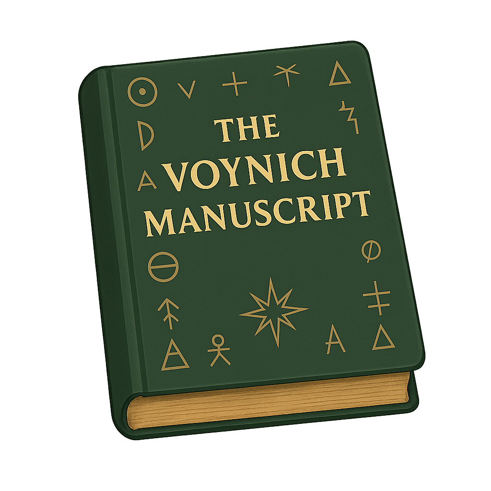

The Voynich Manuscript Decoded
The decoding and reconstruction of the Voynich manuscript by Christine Blackburn.
Open the manuscript to explore keys, decoded folios, harmonic layers, and cosmological references grounded in Neoplatonism.
